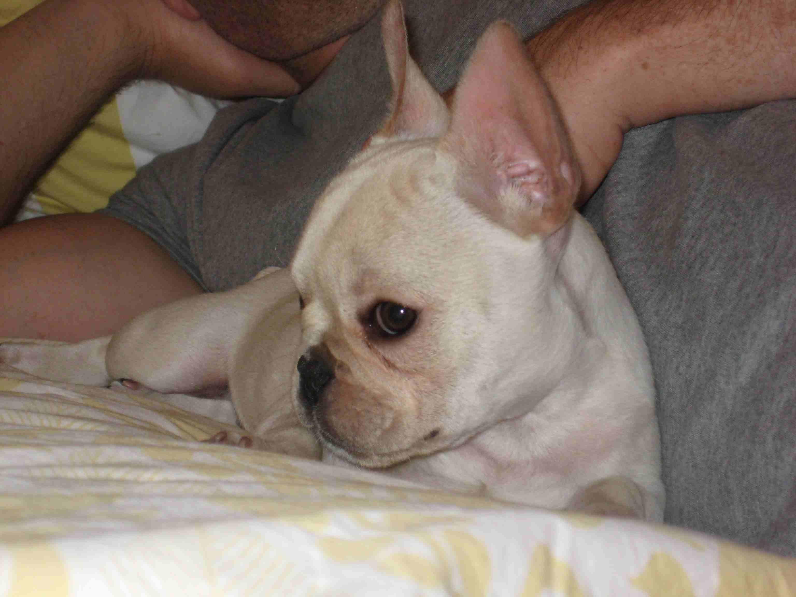
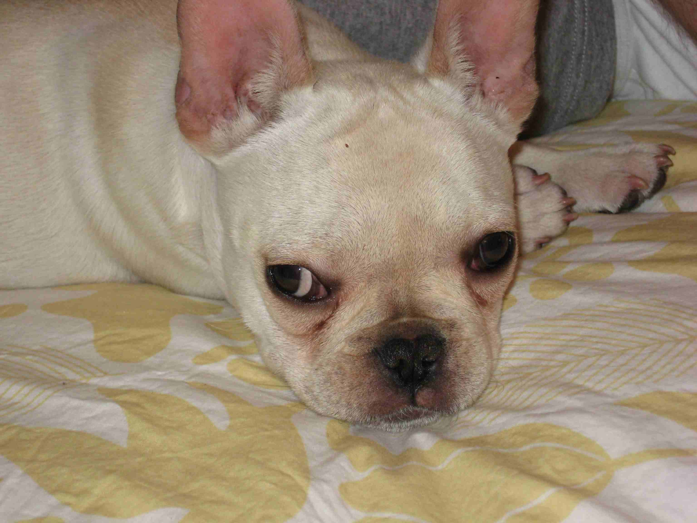

TOPICS
Essays on miscellaneous topics
Short stories
Academic writing
Travel
Social & political comments
Theater-acting-teaching kids
Entertainment reviews
Pets «
My family & its history
Other personal autobiography
My blog
e-mail me
pets
CATS
Maxine (a crazy woman when it comes to animals) and I have had a number of cats over our 12+ years living together. We first moved into a West Village loft in June, 1995, and in September we got our first cat, Arlo, one year old at the time, from a shelter in New Rochelle, NY. Arlo died—or rather was given a lethal something by our vet—in 2006 after a long bout with some kind of feline cancer. For awhile we gave him various medications that seemed to ease his problems, but one day he suddenly lost all coordination, and it was time for the final trip to the vet.
The third sister, Petrushka, is still with us. She has always hated to be held, and for many years would not even allow herself to be touched (though she did not spurn the food and water laid out for her). I think she was never the same after being spayed. Over literally several years—seven or eight—I would edge up to her and touch her slightly until she got used to that, then rest my hand on her, then pet her just a bit. She still hates being held (or even reached for), but for a year or two she has been coming to me and meowing to be petted. When I lie in bed, she will often jump up and settle between the pillows and expect me to pet her firmly and extensively. (Sometimes I will make the most innocent move, but she will feel threatened and hurtle off the bed ) If I want to clip her claws, and therefore grab her, she seems to pick up my vibes, so that I have to summon my deepest acting skills and combine (1) finding that place in me that is totally innocent of ill intent with (2) an agility that can pounce and hold her as she realizes, too late, that she needs to race to freedom. When I release her after the manicure, I have learned to position her very carefully because, as I learned the hard way, when she senses she can escape she will leap from my lap like a frenzied demon, pushing off with her extended rear claws. Fortunately, like most cats, she has no retention span and will be my friend again several minutes later.


Our next cat, Arieh, was a rag doll, passed on to us at a year or older (and with his Israeli name) by a couple one of whom was allergic to cats. While they schmoozed us, they laughed about a sibling of his with a habit of leaving bowel movements in the bath tub, and weren't we lucky we were getting THIS cat instead.
Need I add that THIS cat indeed loved our bathtub as a toilet (also at times the floor, though I think he was acting out when he did this)? When he did use the litter box (which was most of the time), he perched precariously on one corner so that he would not soil his paws in the litter (though he did climb in to cover up his leavings). Chewing leather was a favorite activity (including the pocket of a prized leather jacket belonging to Anthony who at the time was still in the early stages of dating Laura), as was dashing outdoors past our feet if he could manage it.
Oh yes: Arieh also came to us with a congenital bronchial defect that killed him soon after Arlo—or rather, like Arlo, he suddenly lost control of his body and we had to let him fall off the radiator.

Arieh on our bed
BIRD
For years since I had known her, Maxine had been pining for a bird, some kind of parrot. Finally, I said to her, "We're not getting younger, so why don't you get the damned bird sooner rather than later." This was while Arlo and Arieh were both alive. So after some research and visiting stores, Maxine bought a cockatoo and named it (we never learned its sex but I always thought of it as female) Twinkie. I will not reveal here the exorbitant cost of bird with accoutrments.
We were afraid the cats would have a very expensive lunch once Twinkie was in their midst, but in fact she intimidated them. The cats seemed more curious than predatory, but if they got too close, Twinkie would squawk and peck viciously at them. An uneasy truce prevailed. However, Twinkie was also something of a terror with humans. Biting, chewing up books and papers, shrieking when she felt like it. Her depradations were mitigated by having her wings clipped so she couldn't fly well and by covering her cage at night so that when it got light outdoors she was often fooled into thinking it was still night (and therefore would remain asleep instead of shrieking).
There came a time after a few months when Maxine decided she had had her bird needs met, and after advertising at a bird vet's office, we found a new owner who picked up the bird, her cage and playthings, at half what we paid for all of them.


MORE CATS
After Twinkie had flown to another home but while Arlo and Arieh still alive, we...obtained...a ginger cat, Lucy, from Maxine's daughter, Karen. While living and working in Florence for three years in the mid-1990s, Karen took Lucy from a litter brought to the office by a colleague who had found the kittens in the woods near her Tuscany home. Lucy apparently had the knack of leaping from Karen's first floor (2nd floor American style) window and landing safely on the ground. When Karen returned to the U.S., she brought Lucy along, and the two of them lived contentedly for several years. There came a point a few years ago, however, when Karen and her to-be husband did not see eye to eye on Lucy's value, and Maxine and I offered to look after Lucy for awhile. She is still with us. So for awhile we had four cats.
In the past year, Lucy has become—how shall I say—large. She and the other cats never got along especially well, but they learned to abide each other. More of Lucy's story will come in the next section, below.

After the demise of Arlo and Arieh, Maxine was distraught at having a mere two cats and often spoke wistfully of adding another rag doll. So in mid-November, 2007, a 12-week-old rag doll kitten, Blu, joined our household. As with Twinkie, we were concerned about how well he would survive with two grown, worldly-wise cats. And as with Twinkie, those other cats have been the ones bullied. Petrushka will hiss and lash at Blu with with her claws a few times, and that will be that. But Blu terrorizes Lucy, often waking us in the night as she howls for him to leave her alone but seems to have little ability to chase him away.
Is Blu playing? Does he think this is his mother or siblings? Is he trying to be sexually active with a spayed, declawed cat who presumably cannot emit pheromones? We will know better when Blu is 6 months old and goes for his...mmmm...alteration, though not by a tailor. When I think of that day,I am torn b etween (1) a reckless empathetic desire to rescue him from the end of frisky maleness and (2) gloating over the likelihood that he will be transformed into a good (i.e., behaving as Maxine and I want) cat.
One of Blu's motives (if cats have such: I think he is all id) seems to be to take over any geography claimed by the older cats. Lucy and Petrushka do get some revenge by eating Blu's special food (a fact that has likely contributed to Lucy's...growth), but since that only means we have to put out more for Blu, he really isn't paying any freight.


1. Blu approaches rocker from left 2. Blu comes in from other side of rocker 3. Blu makes her presence known to Lucy


4. Lucy seeks sanctuary 5. Lucy pauses to savor her freedom 6. Blu offers to play pawsies as Lucy leaves

DOG
In 2008, Karen and her husband Dave decided they wanted a
dog. (Might they have instead taken Lucy back? Fuhgeddaboudit.)
So Lola, a French bulldog, came on the scene. Although I think it is no secret that I am no fan of dogs, Lola (as dogs go) is pretty cute.
They have asked me to include pictures of her here that they took. (Dave is the one in the background.)
 